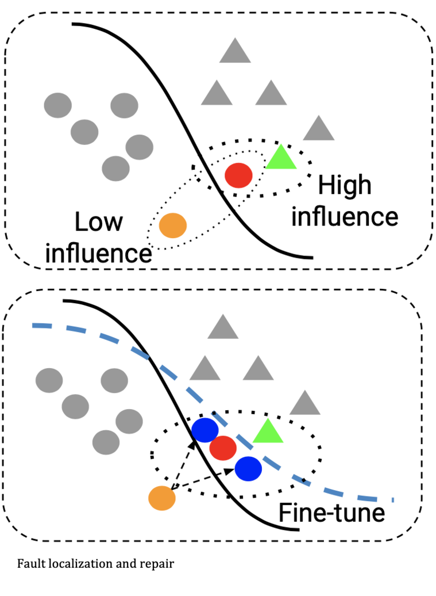
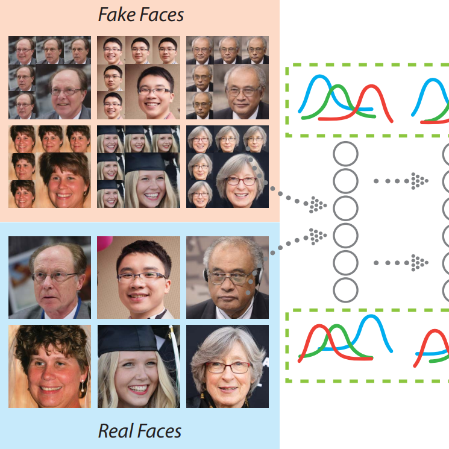

|
Jian Wang (王剑)Jian Wang is a Ph.D. candidate (expected Jan 2026, now at job market ) at the College of Computing and Data Science (CCDS), Nanyang Technological University (NTU), Singapore, advised by Prof. Li Yi. His work focuses on code LLM security and intelligence. Email / CV / Biography / Google Scholar / Twitter |

|
BioSince 2019, Jian has been a research assistant at SMU (2023-Aug - present) and NTU(2020-2023 Aug). Previously, he was a researcher at Xiaomi AI Lab and a software engineer at 58.com. He expects to receive his Ph.D. from NTU in 2026 and holds a B.A. in Software Engineering from Tianjin University (2011). Jian’s research interests include machine learning algorithms and theory, adversarial methods for privacy-sensitive data, and their applications. He is particularly interested in security analysis, trend analysis, and privacy protection. Currently, he focuses on robust AI, developing high-fidelity adversarial attacks and defenses—such as trace-based repair for defense, adversarial motion-blur attacks, and facial-skew adversarial examples for deepfake detection. Representative papers are highlighted. |
Research |
|
|  |
Automatic RNN Repair via Model-based Analysis
We propose a lightweight model-based influence analysis to help understand and repair incorrect behaviors of an RNN. Specifically, we build an automaton to enable high-quality feature extraction and to characterize the stateful and statistical behaviors of an RNN over all training data. |
|
|
Watch out! Motion is Blurring the Vision of Your Deep Neural Networks
We introduce a motion-based adversarial blur attack (ABBA) that can generate visually natural motion-blurred adversarial examples. |
|  |
FakeSpotter: A Simple yet Robust Baseline for Spotting AI-Synthesized Fake Faces
Media coverage: Synced Review Monitoring neuron behavior can help detect AI-synthesized fake faces, since layer-by-layer activation patterns may capture subtle features important for the detector. |
Engineering |
- Singapore Management University(SMU) — Research Assistant (code Intelligence and Code LLM security) (2023-Aug ~ )
- Nanyang Technological University (NTU) — Research Assistant (DL and LLM security), Singapore (2019-Dec ~ 2023-Aug )
- Xiaomi Group — Xiaomi AI Lab (trained portrait image DL generator), Beijing, China (2017–2019)
- 58 Inc. — Backend Engineer (Middleware), 58 Group, Beijing, China (2011–2017)
- Baidu, Inc. — Data Engineer (Intern), Beijing, China (2011)
|
I forked this source code from jonbarron and xujuefei. Also consider Leonid Keselman’s Jekyll fork of this page. |
|
ICP-1900352-1 link |
|
|